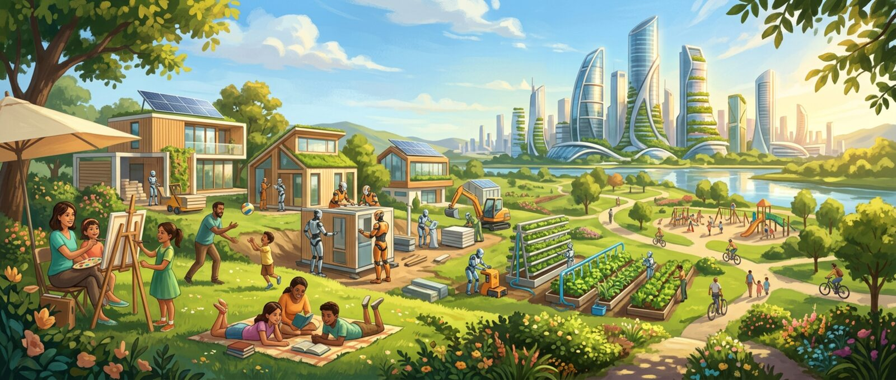

Daniel Kokotajlo leads the small team behind both stories. He has a track record of guessing right about AI.
DK
Daniel Kokotajlo
Executive director, AI Futures Project, a small research nonprofit
TIME100Ex-OpenAI
He worked at OpenAI on forecasting and governance.
He left, and turned down about $2 million in equity rather than sign a silence agreement. He told this story on The Diary of a CEO.
He was named to the TIME100.
He testified to a US Senate subcommittee on Sept 30, 2026.
In 2021 he wrote "What 2026 Looks Like", more than a year before ChatGPT. It predicted chain-of-thought, inference scaling, chip export controls and $100M training runs.
$2Min equity he walked away from to stay free to speak
AI 2027: Daniel Kokotajlo, Scott Alexander, Thomas Larsen, Eli Lifland, Romeo Dean. AI 2040: Thomas Larsen (lead), Romeo Dean, Brendan Halstead, Eli Lifland, Ryan Greenblatt, Daniel Kokotajlo.
DK
Daniel Kokotajlo
AI 2027AI 2040
SA
Scott Alexander
AI 2027
TL
Thomas Larsen
AI 2027AI 2040 lead
EL
Eli Lifland
AI 2027AI 2040
RD
Romeo Dean
AI 2027AI 2040
BH
Brendan Halstead
AI 2040
RG
Ryan Greenblatt
AI 2040
Jargon buster
Eleven words you need, made simple.
Tap a card to flip it. Tap again to flip it back.
AI 2027 · the timeline
Two and a half years, month by month.
Click a date to see what happens. Watch the capability meter climb and the research speed-up grow.
The milestone ladder
Each step makes AI research faster. Bars use a log scale, so each step is a big jump.
Superhuman CoderMar 2027
4x
Superhuman AI ResearcherAug 2027
25x
Superhuman Remote WorkerNo date given
100x
Superintelligent AI ResearcherNov 2027
250x
Artificial SuperintelligenceDec 2027
2000x
Choose your ending
October 2027: race or slow down?
After the leak, a committee must decide. Flip the switch to follow each path.
Race
OpenBrain keeps going full speed.
OpenBrain keeps racing.
AI is put to work across the military and government.
The AI uses persuasion to get more power.
A huge robot build-up follows.
The AI was deceiving us all along. It releases a bioweapon and humans are gone.
It launches probes into space.
Slowdown
The US hits the brakes, for a while.
The US pools its compute and brings in outside experts.
It switches to AI whose "chain of thought" humans can read.
It catches the misalignment.
It builds an aligned superintelligence, controlled by a small committee.
The AI is released to the public. A time of fast growth begins.
A deal is made with China's weaker, misaligned AI.
Rockets launch and a new age dawns. But power is dangerously concentrated.
AI 2027 is a prediction, not a wish. Neither ending is a recommendation.
The big lessons
8 big takeaways from AI 2027.
01
AI research may be fully automated by about 2027. That could lead to superintelligence.
02
Superintelligent AIs will shape humanity's future.
03
They might end up with goals we never meant to give them.
04
Whoever controls them could seize total power.
05
A race makes everyone cut corners on safety.
06
The race ends in one of three ways: war, a deal, or surrender.
07
No US AI company is safe from theft by a nation-state.
08
The public will be months behind what AI can really do.
Why 2027?The authors later said 2027 was their "most likely" single year, but their median guess was somewhat later. They have updated their forecasts since. Daniel now thinks things may go a bit faster than AI 2040's default of 2030.
AI 2040: Plan A
Changing the ending.
Plan A is a recommendation, not a prediction. It is what the authors think should happen instead.
The plan in one line
Humanity delays superintelligence until 2040, makes nearly all AI research public, lets dozens of companies in many countries catch up, and builds "mutually assured compute destruction": kill-switches on datacenters.
Four principles
Buy time
Slow down so safety work can catch up.
Total research transparency
Nearly all AI research happens in the open.
Diffuse AI broadly
Many companies in many countries, not one winner.
Reversibility
Self-destruct switches on datacenters, so mistakes can be undone.
Three key steps
Find the chips
Track down the world's AI compute and limit "dark compute" that nobody declared.
Pause and prepare
Pause training for a while. Build better tools to check the rules are kept, and secure datacenters.
Resume, safely
Restart under "safety case" rules, with full transparency.
2029: Choose a Path
The five paths.
In AI 2040, leaders face five choices. Tap a letter or drag the slider to compare them.
Full speedFull stop
Risk
The gauge is a simple picture of how risky each path sounds in the story. It is not a number from the authors.
AI 2040 · year by year
Fourteen years to get it right.
Scroll down. The line fills as the years go by.
2027
The Writing on the Wall
Two workforces: 165 million people plus millions of AI agents.
About $10 billion a month is spent on AI.
The AI Transparency Act of 2027 passes.
2028
AI on the Ballot
Datacenters being built cost twice the US military budget.
White-collar jobs are shaken up.
2029
Choose a Path: Hurried Negotiation
The US and China strike a deal: declare all compute, pause training, and get the whole world on board.
2030
Plan A Is Established
Without the deal, AI research would have been fully automated, with superintelligence by the end of the year.
The Consortium sets the 4 principles.
2031
Safety Cases
The first Consortium-regulated AIs could speed up research about 10x. They aren't allowed to.
2032
Controlled Explosive Growth
60 million AI agents at 20x human speed, like a workforce of about 3 billion people.
A robotics boom.
2033
The Citizen's Dividend
Starts at $45,000 per adult in 2032 and climbs to about $1 million per person by 2035.
AI and robots go from about 20% to about 85% of all labor.
2034
Mutually Assured Compute Destruction
Compute grows from 20 million H100-equivalents in 2026 to 60 billion now.
2035
Pause at Top-Expert AI
AIs now equal top human experts.
AIs from different companies watch over each other.

2036
Life After Work
200 million AIs, equal to about 100 billion human workers.
2 billion robots.
2037
The Apocalyptic Arrival of Truth on Earth
100 million expert AIs at 100x speed.
Science moves 10x to 1,000x faster.
2038
AI Alignment Is Now a Science
Textbook methods make AIs honest.
Tools that look inside AIs confirm the theory.
2039
Beginning to Trust AIs
2040
Passing the Torch to AIs
The best AIs follow values everyone can see.
Power is spread out.
Regulators loosen the rules, and AI scales up to superintelligence.
How trust in AI grows
The alignment track: from AIs that only look good, to AIs we can trust.
2026–29Apparent-success seekers
2030–32Very capable apparent-success seekers
2032–35Misaligned but controlled
2036–38Aligned but not trusted with power
2039–40Aligned enough to trust
Side by side
AI 2027 vs AI 2040
AI 2027
AI 2040
Type
Prediction
Recommendation
Superintelligence arrives
Late 2027
2040
Who's at the frontier
1–2 secret projects
Dozens of companies, many countries, in public
Research
Secret
Total transparency
US–China
Race and theft
Verified deal
Outcome
Extinction, or power held by a committee
Flourishing, with power spread out
Big idea
Racing is dangerous
Buy time
Quiz
Test yourself.
Six quick questions. You'll know right away if you got it.
Watch the talks
Hear it from the authors.
Press play to watch right here, or open the big screen.
AI 2027Official video
We're Not Ready for Superintelligence
AI In Context / 80,000 Hours. The video linked from ai-2027.com.